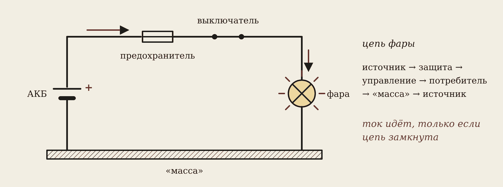
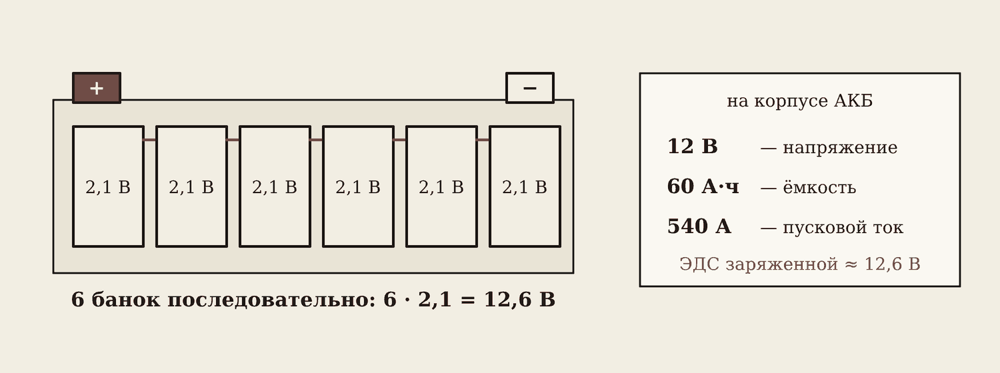
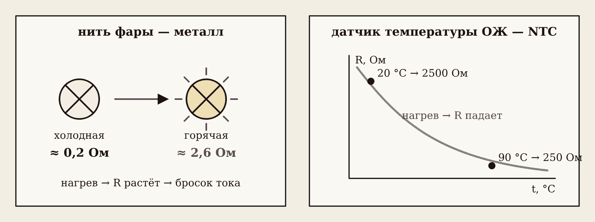
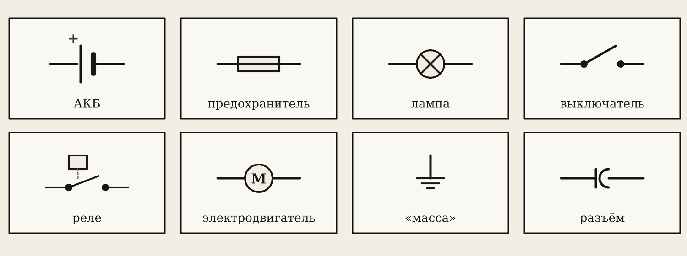
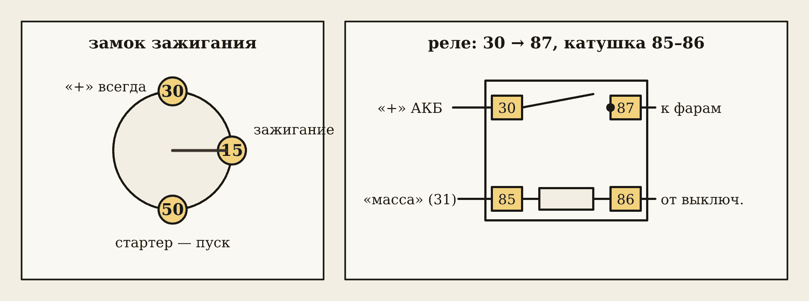
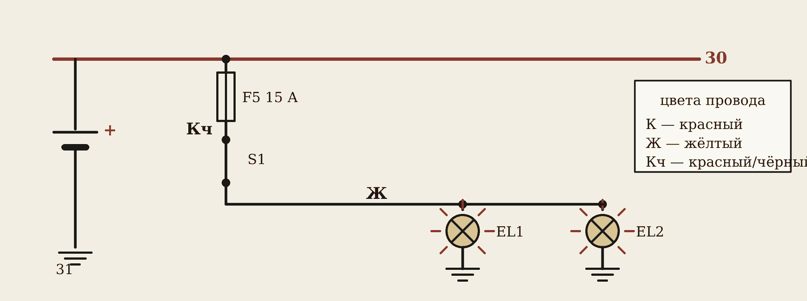

1. Цепь, ток и напряжение

Ток идёт только по замкнутой цепи. В цепи фары: аккумулятор — источник, предохранитель — защита, выключатель — управление, фара — потребитель, «масса» возвращает ток к аккумулятору. Разорвали цепь в любом месте — фара погасла.

- Ток I — сколько заряда проходит за секунду. Единица — ампер [А]. Габарит ≈ 0,4 А, фара ≈ 4,6 А, стартер 150–250 А.
- Напряжение U — то, что толкает заряды по цепи. Единица — вольт [В]. Как давление воды в трубе.
- Сопротивление R — насколько участок мешает току. Единица — ом [Ом].
Аккумулятор — источник ЭДС

ЭДС E — напряжение источника без нагрузки, в вольтах. В аккумуляторе шесть банок по 2,1 В соединены последовательно: 6 · 2,1 = 12,6 В. На корпусе пишут ещё ёмкость (60 А·ч — сколько заряда отдаст) и пусковой ток (540 А — сколько выдержит при пуске).
Как мерить

Запомните
Амперметр — в разрыв цепи (последовательно), ток идёт через него. Вольтметр — параллельно, к двум точкам.
Мультиметр в режиме А щупами на клеммы аккумулятора — короткое замыкание. Большие токи (стартер) меряют токовыми клещами — без разрыва провода.
2. Сопротивление и закон Ома
Провод
Длинный и тонкий провод мешает току сильнее:
R = ρ · l / S
ρ — удельное сопротивление, у меди 0,0175 Ом·мм²/м; l — длина, м; S — сечение, мм².
Провод фары: 4 м, 1 мм². R = 0,0175 · 4 / 1 = 0,07 Ом. Провод стартера сечением 25 мм² — в 25 раз меньше сопротивление на метр. Поэтому он такой толстый.
Температура

У металлов сопротивление растёт при нагреве. Холодная нить фары 55 Вт — около 0,2 Ом, горячая — около 2,6 Ом, в 13 раз больше. В момент включения через холодную нить идёт бросок тока — поэтому лампы чаще всего перегорают при включении.
У датчика температуры охлаждающей жидкости наоборот: это полупроводниковый терморезистор (NTC). При 20 °C — около 2500 Ом, при 90 °C — около 250 Ом. По этому сопротивлению ЭБУ узнаёт температуру двигателя.
Закон Ома для участка цепи

I = U / R
Больше напряжение — больше ток. Больше сопротивление — меньше ток. Закройте пальцем в треугольнике то, что ищете, — останется формула: U = I · R, R = U / I.
- Фара: U = 12 В, R = 2,6 Ом. I = 12 / 2,6 ≈ 4,6 А.
- Обмотка реле 80 Ом, ток 0,15 А. U = 0,15 · 80 = 12 В.
- Габарит: 12 В, 0,42 А. R = 12 / 0,42 ≈ 29 Ом.
Полная цепь: почему тускнеют фары при пуске

Внутри аккумулятора есть своё сопротивление r0 — у исправной АКБ 0,005–0,02 Ом. Закон Ома для полной цепи:
I = E / (R + r0), U = E − I · r0
Пуск: стартер берёт 200 А, r0 = 0,01 Ом. Внутри аккумулятора теряется 200 · 0,01 = 2 В, на клеммах остаётся 12,6 − 2 = 10,6 В — фары тускнеют. У старой или разряженной батареи r0 больше: напряжение падает ниже 9,6 В, стартер не крутит, ЭБУ перезагружается.
3. Электрическая схема автомобиля

Схему рисуют условными знаками: АКБ — длинная и короткая черта; предохранитель — прямоугольник с линией; лампа — круг с крестом; реле — катушка и контакт; «масса» — три черты. Любая цепь читается одинаково: источник → защита → управление → потребитель → «масса».
Номера клемм

| Клемма | Что это |
|---|---|
| 30 | «Плюс» АКБ — есть всегда |
| 15 | «Плюс» после замка зажигания |
| 31 | «Масса» |
| 50 | Управление стартером |
| 85–86 | Обмотка реле |
| 30 → 87 | Силовой контакт реле |
Зачем реле? Через кнопку идёт малый ток катушки, а большой ток фар — коротким толстым проводом через контакт реле. Кнопка не горит, потерь меньше.
Читаем схему фар

От шины 30 через предохранитель F5 15 А по красно-чёрному проводу (Кч) — на выключатель S1, дальше по жёлтому (Ж) — к лампам EL1 и EL2, они — на «массу». Цвет провода пишут буквами: К — красный, Ж — жёлтый, Ч — чёрный. Если EL1 горит, а EL2 нет — виновата сама EL2, её провод или её масса: общая часть цепи исправна.
4. Домашнее задание
- Перепишите в тетрадь Т1, Т2, Т3, Т10.
- Три задачи своего варианта (номер в журнале): лампа (I, R), аккумулятор при пуске (U, Pпот), провод (R, ΔU).
- Найдите в руководстве по ремонту любой машины схему фар и выпишите номер предохранителя, цвета проводов и клеммы.
Словарик
- ЭДС — напряжение источника без нагрузки, В.
- r0 — внутреннее сопротивление источника; у АКБ — сотые доли ома.
- ρ — удельное сопротивление: медь 0,0175 Ом·мм²/м.
- NTC — терморезистор, сопротивление которого при нагреве падает (датчик ОЖ).
- Клемма 15 — «плюс» после замка зажигания.
- Клемма 50 — управление стартером.
- Реле — выключатель, которым управляет малый ток катушки (85–86), а большой ток идёт через контакт 30 → 87.
Эталоны в тетрадь
Перепишите в тетрадь по билетам — каждый эталон на отдельную страницу, с рисунком и строкой «Мой пример».
Ток, напряжение, ЭДС
Электрический ток, сила тока, напряжение, ЭДС: определения, обозначения, единицы. Аккумуляторная батарея как источник ЭДС.
- Электрический ток — направленное движение заряженных частиц, в проводах — электронов. Ток идёт только по замкнутой цепи.
- Сила тока I = q / t — заряд за 1 секунду, ампер [А]. Габарит ≈ 0,4 А, фара ≈ 4,6 А, стартер 150–250 А.
- Напряжение U — то, что толкает заряды по цепи, вольт [В]. Как давление воды в трубе.
- ЭДС E — напряжение источника без нагрузки, вольт [В]. АКБ 12 В — шесть банок по ≈ 2,1 В: E ≈ 12,6 В у заряженной.
- Как проверить: вольтметр — параллельно (щупы на клеммы), амперметр — в разрыв цепи; токовые клещи меряют ток без разрыва.
Сопротивление и температура
Электрическое сопротивление и проводимость: от чего зависят, зависимость сопротивления от температуры. Нить лампы и датчик температуры охлаждающей жидкости.
- Сопротивление R — насколько проводник мешает току, ом [Ом]. Проводимость G = 1 / R, сименс [См].
- R = ρ·l / S: больше у длинного и тонкого провода. Медь ρ = 0,0175 Ом·мм²/м: 4 м провода 1 мм² — 0,07 Ом.
- У металлов при нагреве R растёт: горячая нить фары 55 Вт ≈ 2,6 Ом, холодная ≈ 0,2 Ом — поэтому при включении бросок тока и лампы перегорают в момент включения.
- Датчик температуры охлаждающей жидкости — терморезистор NTC: при нагреве R падает (≈ 2,5 кОм при 20 °C, ≈ 250 Ом при 90 °C). ЭБУ узнаёт температуру по сопротивлению.
- Как проверить: омметром на отключённой детали и сравнить с таблицей из руководства по ремонту.
Закон Ома
Закон Ома для участка и для полной цепи. Внутреннее сопротивление АКБ: почему напряжение падает при пуске стартера.
- Для участка цепи: I = U / R. Треугольник: U сверху, I и R снизу — закрыть то, что ищем.
- Для полной цепи: I = E / (R + r0), на клеммах источника U = E − I·r0.
- У исправной АКБ r0 ≈ 0,005–0,02 Ом. Пуск: 200 А · 0,01 Ом = 2 В теряется внутри, на клеммах 10,6 В — фары тускнеют.
- У разряженной или старой АКБ r0 большое: при пуске напряжение падает ниже 9 В, стартер не крутит, ЭБУ перезагружается.
- Как проверить: вольтметр на клеммах при прокрутке стартером или нагрузочная вилка — исправная заряженная АКБ держит не меньше 9,6–10 В.
Электрическая схема автомобиля
Электрическая схема автомобиля: элементы цепи и условные обозначения, номера клемм (30, 15, 31, 50, 85–87), цвета проводов.
- Любая цепь автомобиля: источник (АКБ, генератор) → защита (предохранитель) → управление (выключатель, реле) → потребитель → «масса».
- Обозначения на схеме: АКБ, предохранитель, лампа, выключатель, реле, электродвигатель, «масса» — условные знаки по ЕСКД.
- Номера клемм: 30 — «плюс» АКБ напрямую; 15 — «плюс» после замка зажигания; 31 — «масса»; 50 — управление стартером; 85 и 86 — обмотка реле; 30 → 87 — силовой контакт реле.
- Цвета проводов на схеме пишут буквами: К — красный, Ч — чёрный, Кч — красный с чёрной полосой. «Плюс» 30 часто красный, «масса» — чёрная или коричневая.
- Как читать схему: от клеммы 30 через предохранитель и выключатель (реле) к потребителю и на «массу» 31.
Проверь себя
Сначала ответьте сами — в тетради или вслух. Потом нажмите на вопрос, чтобы увидеть ответ.
1В чём измеряют ЭДС аккумулятора?
В вольтах [В].
2Что значит клемма 15?
«Плюс» после замка зажигания: появляется, когда зажигание включено.
3Медный провод 2 м, сечение 1 мм². Какое сопротивление?
R = 0,0175 · 2 / 1 = 0,035 Ом.
4E = 12,6 В, r0 = 0,02 Ом, ток стартера 150 А. Какое напряжение на клеммах?
U = 12,6 − 150 · 0,02 = 12,6 − 3 = 9,6 В — на пределе нормы.
5Почему лампы чаще перегорают при включении?
Холодная нить имеет сопротивление в 10–13 раз меньше горячей — в момент включения бросок тока.
6Как включить амперметр, чтобы измерить ток фары?
В разрыв цепи, последовательно с фарой.
Попробуйте в лаборатории
Откройте на телефоне или компьютере — ничего устанавливать не нужно.
Ответы к «Проверь себя»
- В вольтах [В].
- «Плюс» после замка зажигания: появляется, когда зажигание включено.
- R = 0,0175 · 2 / 1 = 0,035 Ом.
- U = 12,6 − 150 · 0,02 = 12,6 − 3 = 9,6 В — на пределе нормы.
- Холодная нить имеет сопротивление в 10–13 раз меньше горячей — в момент включения бросок тока.
- В разрыв цепи, последовательно с фарой.